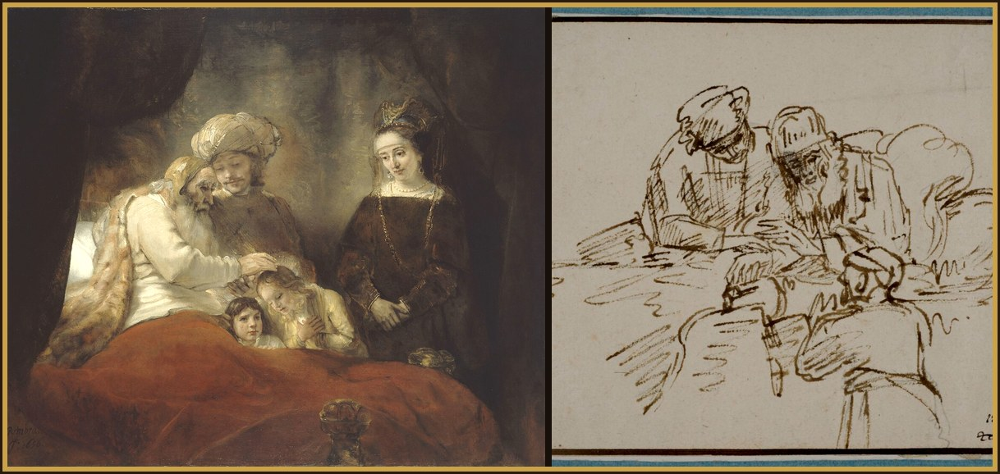

Intention the favor I place in your hands
Read Genesis 48 in the NABRE →
1After these things were done, it was reported to Joseph that his father was sick. And taking his two sons Manasseh and Ephraim, he went directly to him. 2And it was told to the old man, “Behold, your son Joseph is coming to you.” And being strengthened, he sat up in bed. 3And when he had entered to him, he said: “Almighty God appeared to me at Luz, which is in the land of Canaan, and he blessed me. 4And he said: ‘I will increase and multiply you, and I will make you influential among the people. And I will give this land to you, and to your offspring after you, as an everlasting possession.’ 5Therefore, your two sons, who were born to you in the land of Egypt before I came here to you, will be mine. Ephraim and Manasseh will be treated by me just like Reuben and Simeon. 6But the remainder, whom you will conceive after them, will be yours, and they will be called by the name of their brothers among their possessions. 7As for me, when I came from Mesopotamia, Rachel died in the land of Canaan on the very journey, and it was springtime. And I entered Ephrath and buried her next to the way of Ephrath, which by another name is called Bethlehem.” 8Then, seeing his sons, he said to him: “Who are these?” 9He responded, “They are my sons, whom God gave to me as a gift in this place.” “Bring them to me,” he said, “so that I may bless them.” 10For Israel’s eyes were clouded by reason of his great age, and he was unable to see clearly. And when they were placed up against him, he kissed and embraced them. 11And he said to his son: “I have not been cheated out of seeing you. Moreover, God has shown me your offspring.” 12And when Joseph had taken them from his father’s lap, he reverenced prone on the ground. 13And he placed Ephraim on his right, that is, towards the left hand of Israel. Yet truly Manasseh was on his left, namely, towards his father’s right hand. And he placed them both up against him. 14And he, extending his right hand, placed it over the head of Ephraim, the younger brother, but the left hand was on the head of Manasseh, who was the elder, so that his hands were crossed. 15And Jacob blessed the sons of Joseph, and he said: “God, in whose sight my fathers, Abraham and Isaac, walked; God, who pastured me from my youth until the present day; 16the Angel, who rescues me from all evils: bless these boys. And let my name be invoked over them, and also the names of my fathers, Abraham and Isaac. And may they increase into a multitude across the earth.”

.jpg){kind=link}

17But Joseph, seeing that his father had placed his right hand over the head of Ephraim, took it gravely. And grasping his father’s hand, he tried to lift it from Ephraim’s head and transfer it onto the head of Manasseh. 18And he said to his father: “It should not have come to pass this way, father. For this one is the firstborn. Place your right hand over his head.” 19But refusing, he said: “I know, my son, I know. And this one, indeed, will be among the people and will be multiplied. But his younger brother will be greater than he. And his offspring will increase among the nations.” 20And he blessed them at that time, saying: “In you, Israel will be blessed, and it will be said: ‘May God treat you like Ephraim, and like Manasseh.’ ” And he established Ephraim before Manasseh. 21And he said to his son Joseph: “See, I am dying, and God will be with you, and he will lead you back to the land of your fathers. 22I give you one part beyond that of your brothers, which I took from the hand of the Amorite with my sword and my bow.”
Jacob sits up to die and claims Joseph’s sons, born in Egypt, as his own, equal to Reuben and Simeon. Then he crosses his hands: the right hand goes to Ephraim, the younger. Joseph tries to lift it off. Jacob refuses. “I know, my son, I know.” The blessing does not follow the order you arranged.
- Where are you still trying to uncross God’s hands?
- Who have you decided is too late, or too far from home, to be counted in the promise?
The First Sorrowful Mystery - The Agony
Fruit: Uniformity With the Will of God · Matthew 26:36
O Most Sorrowful Mother Mary,
meditating on the Mystery of the Agony of Our Lord in the Garden, when, in the grotto of the Garden of Olives, Jesus saw the sins of the world unfolded before Him by Satan, who sought to dissuade Him from the sacrifice He was about to make; when, His soul shrinking from the sight, and His precious blood flowing from every pore at the vision of the torture and death He was to undergo, your own sufferings, dear Mother, the future sufferings of His Church, and His own sufferings in the Blessed Sacrament, He cried in anguish, “Abba! Father! If it be possible, let this chalice pass from Me!”; but, immediately resigning Himself to His Father’s will, He prayed, “Not as I will, but as Thou wilt!”
The Second Sorrowful Mystery - The Scourging at the Pillar
Fruit: Mortifying My Senses · John 19:1
O Most Sorrowful Mother Mary,
meditating on the Mystery of the Scourging of Our Lord when, at Pilate’s command, your divine Son, stripped and bound to a pillar, was lacerated from head to foot with cruel scourges and His flesh torn away until His mortified body could bear no more,
The Third Sorrowful Mystery - The Crowning With Thorns
Fruit: Courage in Tough Trials · Matthew 27:27
O Most Sorrowful Mother Mary,
meditating on the Mystery of the Crowning of Our Lord with thorns, when, the soldiers, binding about His head a crown of sharp thorns, showered blows upon it, driving the thorns deeply into His head; then, in mock adoration, knelt before Him, crying, “Hail, King of the Jews!”
The Fourth Sorrowful Mystery - The Carrying of the Cross
Fruit: Patience in Adversity · Luke 23:26
O Most Sorrowful Mother Mary,
meditating on the Mystery of the Carrying of the Cross, when, with the heavy wood of the Cross upon His shoulders, your divine Son was dragged, weak and suffering, yet patient, through the streets, amidst the revilements of the people, to Calvary; falling often, but urged along by the cruel blows of His executioners,
The Fifth Sorrowful Mystery - The Crucifixion
Fruit: Forgiveness · John 19:25
O Most Sorrowful Mother Mary,
meditating on the Mystery of the Crucifixion, when your divine Son was nailed to the cross, upon which He died after three hours of indescribable agony, during which time He begged His Father forgiveness of His enemies,
The Thanksgiving Prayer
Hail! Queen of the Most Holy Rosary, my Mother Mary, hail! At your feet I humbly pray and offer you a crown of blood-red roses, in remembrance of the passion of your divine Son. Each ten bound together, recalling to you a sorrowful mystery, with my petition for a particular grace. O Holy Queen, dispenser of God’s graces and mother of all who invoke your holy name. Do not look upon my gift and fail to see its binding. As you graciously receive my gift, I kindly implore you to receive my thanksgiving; from your bounty you have granted me the favor I so trustingly sought. I despaired not of what I ask of thee, and thou has truly shown thyself my Mother!
Prayer in Thanksgiving
Sweet Mother Mary, I offer you this Spiritual Communion to bind my bouquets in a wreath to place upon your brow in thanksgiving for the favor I place in your hands.
Day 7
I perform miracles in proportion to your full surrender to me and to your not thinking of yourselves. I sow treasure troves of graces when you are in the deepest poverty. No person of reason, no thinker, has ever performed miracles, not even among the saints. He does divine works whosoever surrenders to God. So don’t think about it any more, because your mind is acute and for you it is very hard to see evil and to trust in me and to not think of yourself. Do this for all your needs, do this, all of you, and you will see great continual silent miracles. I will take care of things, I promise this to you.
Ten times
O Jesus, I surrender myself to you, take care of everything!
To Our Lady
Mother, I am yours now and forever. Through you and with you I always want to belong completely to Jesus.